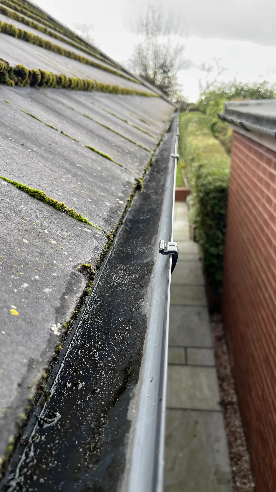

Gutter Vacuuming
At All Saints Jet Washing, we provide safe and thorough gutter cleaning for homes and businesses across Bromsgrove and nearby areas.
Before

After
We use a SkyVac gutter vacuum system, allowing us to clear debris, moss, and leaves from the ground — no ladders, no mess, and no risk to your property.
The SkyVac system includes a high-level inspection camera, so we can check every section of your guttering before and after cleaning. This ensures the job is done properly and nothing is missed.
Our gutter cleaning service includes:
- Full gutter vacuum cleaning
- Fascia and soffit washing (if requested)
- Camera inspection for before and after checks
Regular gutter maintenance helps prevent blockages, leaks, and water damage. Whether you need a one-off clean or routine maintenance, we'll keep your guttering clear and working as it should.
What is a SkyVac?
The SkyVac is a powerful, high-level vacuuming system that allows us to clean gutters safely from the ground. It uses lightweight carbon fibre poles to reach up to 40ft, and a powerful vacuum to remove all debris, leaves, and moss from your gutters. The system also includes a camera, so we can see what we are doing and ensure a thorough clean.
Contact Us